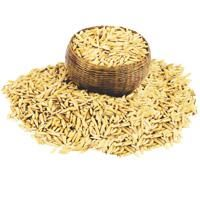
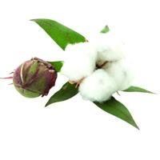
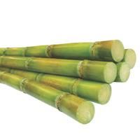
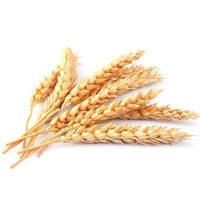
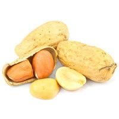

Paddy

Paddy, also called rice paddy, small, level, flooded field used to cultivate rice in southern and eastern Asia.
Wet-rice cultivation is the most prevalent method of farming in the Far East
where it utilizes a small fraction of the total land yet feeds the majority of the rural population.
Rice was domesticated as early as 3500 BC, and by about 2,000 years ago it was grown in almost
all of the present-day cultivation areas,predominantly deltas, floodplains and coastal plains, and some terraced valley slopes.
Climate and Soil requirement of Paddy Crop Cultivations
Rice is a crop of tropical climate. However, it is also grown successfully
in humid to sub-humid regions under subtropical and temperate climate.
Rice is cultivated in almost all types of soils with varying productivity.
Under high temperature, high humidity with sufficient rainfall and irrigation
facilities, rice can be grown in any type of soil.
Cotton

Cotton is a soft, fluffy staple fiber that grows in a boll,
or protective case, around the seeds of the cotton plants
of the genus Gossypium in the mallow family Malvaceae.
The fiber is almost pure cellulose, and can contain minor
percentages of waxes, fats, pectins, and water.
Climate and Soil requirement of Cotton Crop Cultivations
Cotton is a tropical plant grown as an annual
agricultural crop in hotter regions of the world,
including in 17 U.S. states across the South,
according to the U.S. Department of Agriculture (USDA)
Economic Research Service. Cotton requires soil temperatures
above 60 degrees Fahrenheit and a long growing season of five
to six months for a good harvest.
Sugarcane

Sugarcane, (Saccharum officinarum), perennial grass of the family Poaceae,
primarily cultivated for its juice from which sugar is processed. Most of
the world’s sugarcane is grown in subtropical and tropical areas. The plant
is also grown for biofuel production, especially in Brazil, as the canes can
be used directly to produce ethyl alcohol (ethanol). The by-products from cane
sugar processing, namely the straw and bagasse (cane fibres), can be used to
produce cellulosic ethanol, a second-generation biofuel.
Climate and Soil requirement of Sugar cane Crop Cultivations
Sugarcane is an important industrial crop used for sugar and bioenergy.
It is one of the world’s major C4 crops that mainly grow in the tropic
and subtropic regions. Weather and climate related events (i.e., growth
environment of atmospheric [CO2], temperature, precipitation, and other
extreme weather) are the key factors for sugarcane production worldwide,
especially in many developing countries.High temperature due to climate
change in Northeastern Brazil will increase the evapotranspiration rates
reducing the amount of water available in soils, making the planting of
sugarcane increasingly difficult and considerably increasing irrigation
demand.
Wheat

Bheat is one of the oldest and most important of the cereal crops.
Of the thousands of varieties known, the most important are common wheat
(Triticum aestivum), used to make bread; durum wheat (T. durum), used in
making pasta (alimentary pastes) such as spaghetti and macaroni; and club
wheat
Climate and Soil requirement of Wheat Crop Cultivations
Wheat is crop of cool environment. However, it requires different temperatures
at different stages of plant growth and development. Temperature requirement
may slightly differ from one variety to another at the time of germination,
however, general minimum temperature is required from 3.5-5.50 c and
optimum 20-250 and maximum temperature is 350 . On temperature below or
above to optimum, germination of seed decreases slowly. If temperature
is more than 300 c at the time of maturity it leads to force maturity
and yield loss. Winter wheat bears cold waves and frost in a better way
in comparison to spring wheat.
Ground nut

Groundnuts are a popular source of food throughout the world,
consumed either as peanut butter or crushed and used for groundnut oil
or simply consumed as a confectionary snack. Groundnuts are cultivated
in the tropical and subtropical regions of the world on sandy soils.
Yields of groundnut vary from about 400 kg to several tonnes per hectare,
depending on the production system, but on the average, the global yield
is 2500–2700 kg per hectare [30]. Details on soil requirements, required
precipitation and temperature, planting season, maturity duration, major
diseases, and pests affecting groundnuts
Climate and Soil requirement of ground nut Crop Cultivations
Groundnut is a tropical plant that requires a long, warm growing season.
It can grow up to an elevation of 1160 m above sea level. A well-distributed
rainfall of at least 50 cm during growing season, abundant sunshine and relatively
warm temperatures are best suited for its cultivation.